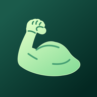
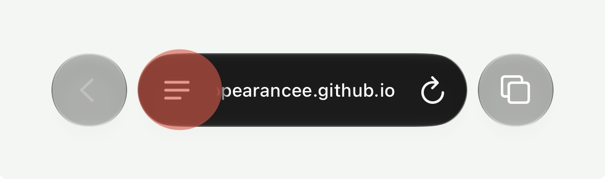
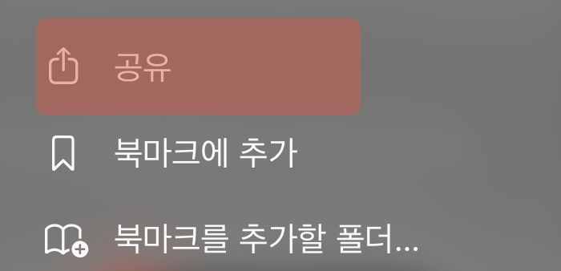
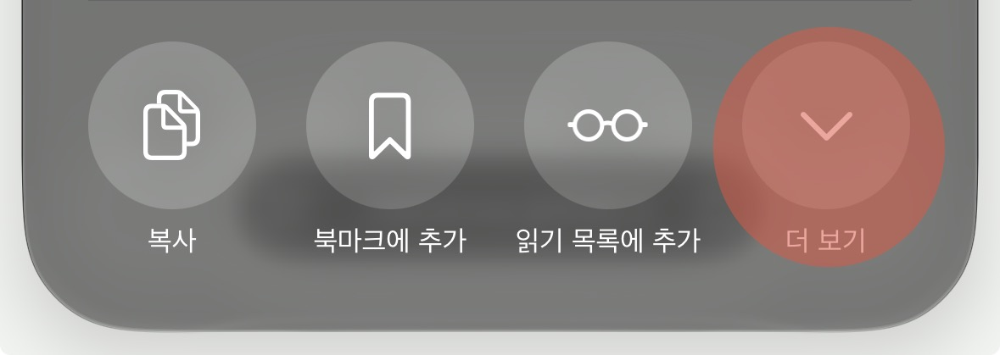
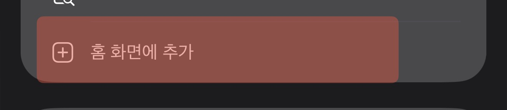
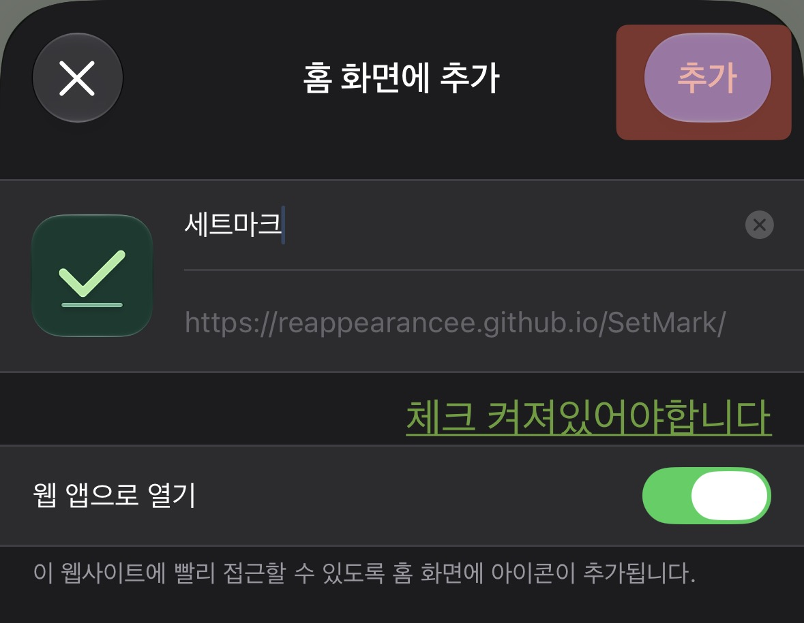

세트마크
홈 화면에 추가해서 운동을 기록해 보세요.
iPhone에 추가하기
카카오톡에서 열었다면 링크를 복사해 Safari에서 열어요.
-
주소창 옆 페이지 메뉴 버튼을 눌러요.

-
공유를 눌러요.

-
더 보기를 눌러요.

-
홈 화면에 추가를 선택해요.

-
웹 앱으로 열기가 보이면 켜고, 오른쪽 위 추가를 눌러요.

Safari에 공유 버튼(□↑)이 바로 보이면, 공유 메뉴에서 홈 화면에 추가를 찾을 수 있어요.
추가한 뒤 홈 화면의 세트마크 아이콘을 눌러요.